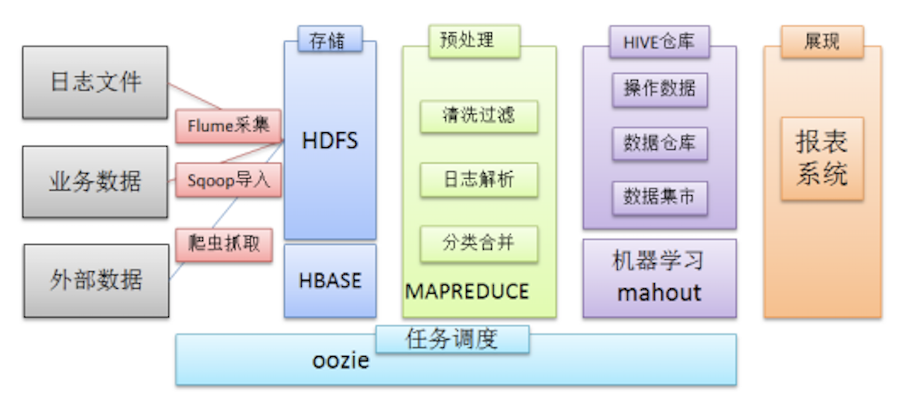
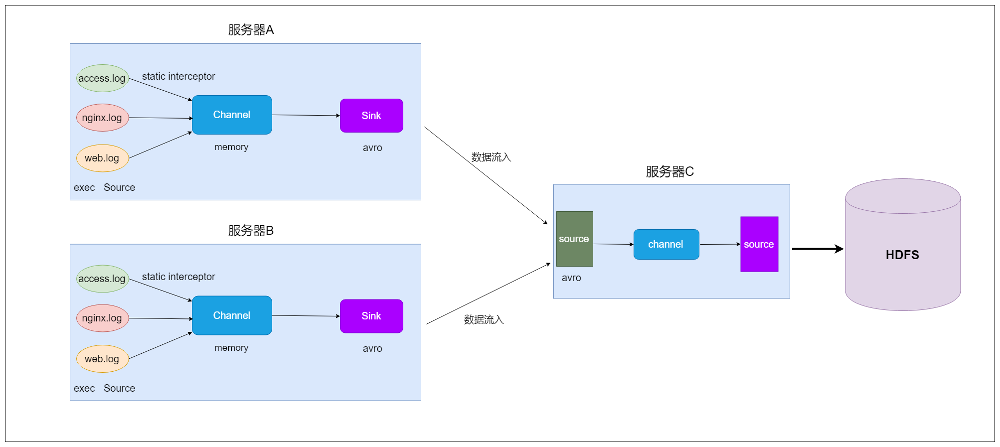
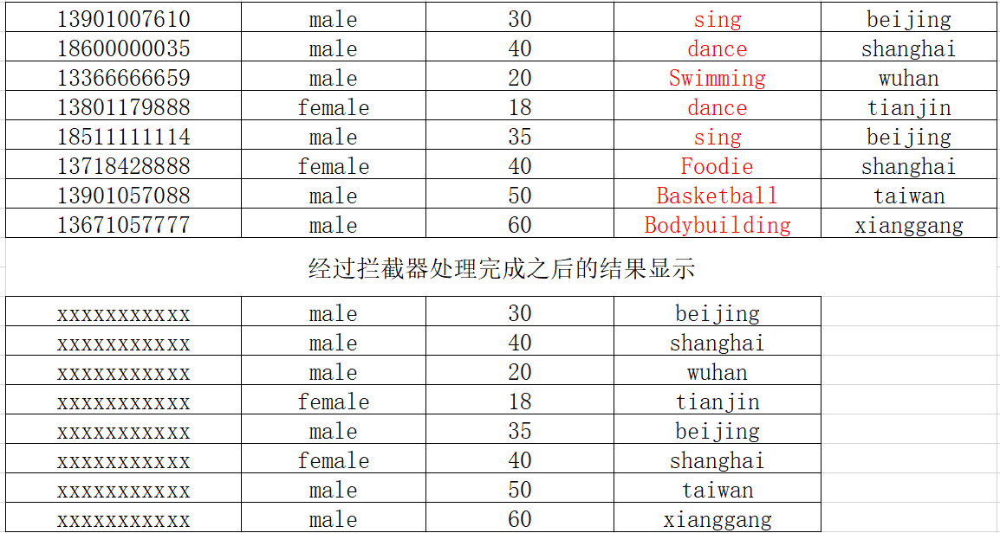

Flume日志采集框架
1. Flume是什么

在一个完整的离线大数据处理系统中，除了hdfs+mapreduce+hive组成分析系统的核心之外，还需要数据采集、结果数据导出、任务调度等不可或缺的辅助系统，而这些辅助工具在hadoop生态体系中都有便捷的开源框架。
- Flume是Cloudera提供的一个高可用的，高可靠的，分布式的==海量日志采集、聚合和传输的系统==
- Flume支持在日志系统中定制各类数据发送方，用于收集数据；
- Flume提供对数据进行简单处理，并写到各种数据接受方（可定制）的能力。
重构后的版本统称为 Flume NG（next generation）；改动的另一原因是将 Flume 纳入 apache 旗下，cloudera Flume 改名为 Apache Flume。
备注：Flume参考资料
官方网站： http://flume.apache.org/
用户文档： http://flume.apache.org/FlumeUserGuide.html
开发文档： http://flume.apache.org/FlumeDeveloperGuide.html
2. Flume的架构
- Flume 的核心是把数据从数据源收集过来，再送到目的地。为了保证输送一定成功，在送到目的地之前，会先缓存数据，待数据真正到达目的地后，删除自己缓存的数据。
- Flume分布式系统中==最核心的角色是agent==，flume采集系统就是由一个个agent所连接起来形成。
2.1 核心概念
Client：
- Client生产数据，运行在一个独立的线程。
Event：
- 一个数据单元，消息头和消息体组成。（Events可以是日志记录、 avro 对象等。）
Flow：
- Event从源点到达目的点的迁移的抽象。
Agent：
- 一个独立的Flume进程，包含组件Source、 Channel、 Sink。（Agent使用JVM 运行Flume。每台机器运行一个agent，但是可以在一个agent中包含多个sources和sinks。）
Source：
- 数据收集组件。（source从Client收集数据，传递给Channel）
Channel：
- 中转Event的一个临时存储，保存由Source组件传递过来的Event。（Channel连接 sources 和 sinks ，这个有点像一个队列。）
Sink：
- 从Channel中读取并移除Event， 将Event传递到FlowPipeline中的下一个Agent（如果有的话）（Sink从Channel收集数据，运行在一个独立线程。）
2.2 Agent结构
Flume 运行的核心是 Agent。Flume以agent为最小的独立运行单位。一个agent就是一个JVM。它是一个完整的数据收集工具，含有三个核心组件，分别是
source、 channel、 sink。通过这些组件， Event 可以从一个地方流向另一个地方，如下图所示。

2.3 Source
Source是数据的收集端，负责将数据捕获后进行特殊的格式化，将数据封装到事件（event） 里，然后将事件推入Channel中。 Flume提供了很多内置的Source， 支持 Avro， log4j， syslog 和 http post(body为json格式)。可以让应用程序同已有的Source直接打交道，如AvroSource，SyslogTcpSource。 如果内置的Source无法满足需要， Flume还支持自定义Source。

source类型：

2.4、Channel
Channel是连接Source和Sink的组件，大家可以将它看做一个数据的缓冲区（数据队列），它可以将事件暂存到内存中也可以持久化到本地磁盘上， 直到Sink处理完该事件。介绍两个较为常用的Channel， MemoryChannel和FileChannel。
Channel类型：

2.4、Sink
- Sink从Channel中取出事件，然后将数据发到别处，可以向文件系统、数据库、 hadoop存数据， 也可以是其他agent的Source。在日志数据较少时，可以将数据存储在文件系统中，并且设定一定的时间间隔保存数据。

- Sink类型：

3. Flume采集系统结构图
3.1 简单结构
- 单个agent采集数据

3.2 复杂结构
- 2个agent串联

- 多个agent串联

- 多个channel

4. Flume安装部署
==Flume安装很简单，解压好基本上就可以使用==
1、下载安装包
- http://archive.cloudera.com/cdh5/cdh/5/flume-ng-1.6.0-cdh5.14.2.tar.gz
- flume-ng-1.6.0-cdh5.14.2.tar.gz
2、规划安装目录
- /kkb/install
3、上传安装包到服务器
4、解压安装包到指定的规划目录
- tar -zxvf flume-ng-1.6.0-cdh5.14.2.tar.gz -C /kkb/install
5、重命名解压目录
- mv apache-flume-1.6.0-cdh5.14.2-bin flume-1.6.0-cdh5.14.2
6、修改配置
进入到flume安装目录下的conf文件夹中
先重命名文件
- mv flume-env.sh.template flume-env.sh
修改文件，添加java环境变量
- vim flume-env.sh
export JAVA_HOME=/kkb/install/jdk1.8.0_141
5. Flume实战
5.1 采集文件到控制台
1、需求描述
监控一个文件如果有新增的内容就把数据采集之后打印控制台，通常用于测试/调试目的2、==flume配置文件开发==
- 在flume的安装目录下创建一个文件夹myconf， 后期存放flume开发的配置文件
- mkdir /kfly/install/flume-1.6.0-cdh5.14.2/myconf
- vim tail-memory-logger.conf
# Name the components on this agent #定义一个agent，分别指定source、channel、sink别名 a1.sources = r1 a1.sinks = k1 a1.channels = c1 #配置source #指定source的类型为exec，通过Unix命令来传输结果数据 a1.sources.r1.type = exec #监控一个文件，有新的数据产生就不断采集走 a1.sources.r1.command = tail -F /kfly/install/flumeData/tail.log #指定source的数据流入的channel中 a1.sources.r1.channels = c1 #配置channel #指定channel的类型为memory a1.channels.c1.type = memory #指定channel的最多可以存放数据的容量 a1.channels.c1.capacity = 1000 #指定在一个事务中source写数据到channel或者sink从channel取数据最大条数 a1.channels.c1.transactionCapacity = 100 #配置sink a1.sinks.k1.channel = c1 #类型是日志格式，结果会打印在控制台 a1.sinks.k1.type = logger- 在flume的安装目录下创建一个文件夹myconf， 后期存放flume开发的配置文件
3、启动agent
- 进入到node01上的/kkb/install/flume-1.6.0-cdh5.14.2目录下执行
`shell
bin/flume-ng agent -n a1 -c myconf -f myconf/tail-memory-logger.conf -Dflume.root.logger=info,console
其中：
-n表示指定该agent名称
-c表示配置文件所在的目录
-f表示配置文件的路径名称
-D表示指定key=value键值对—这里指定的是启动的日志输出级别
#### 5.2 采集文件到HDFS
- 1、需求描述
监控一个文件如果有新增的内容就把数据采集到HDFS上
- 2、结构示意图

- ==3、flume配置文件开发==
- vim file2Hdfs.conf
```properties
# Name the components on this agent
a1.sources = r1
a1.sinks = k1
a1.channels = c1
#配置source
a1.sources.r1.type = exec
a1.sources.r1.command = tail -F /kfly/install/flumeData/tail.log
a1.sources.r1.channels = c1
#配置channel
a1.channels.c1.type = file
#设置检查点目录--该目录是记录下event在数据目录下的位置
a1.channels.c1.checkpointDir=/kfly/data/flume_checkpoint
#数据存储所在的目录
a1.channels.c1.dataDirs=/kfly/data/flume_data
#配置sink
a1.sinks.k1.channel = c1
#指定sink类型为hdfs
a1.sinks.k1.type = hdfs
#指定数据收集到hdfs目录
a1.sinks.k1.hdfs.path = hdfs://node01:8020/tailFile/%Y-%m-%d/%H%M
#指定生成文件名的前缀
a1.sinks.k1.hdfs.filePrefix = events-
#是否启用时间上的”舍弃” -->控制目录
a1.sinks.k1.hdfs.round = true
#时间上进行“舍弃”的值
# 如 12:10 -- 12:19 => 12:10
# 如 12:20 -- 12:29 => 12:20
a1.sinks.k1.hdfs.roundValue = 10
#时间上进行“舍弃”的单位
a1.sinks.k1.hdfs.roundUnit = minute
# 控制文件个数
#60s或者50字节或者10条数据，谁先满足，就开始滚动生成新文件
a1.sinks.k1.hdfs.rollInterval = 60
a1.sinks.k1.hdfs.rollSize = 50
a1.sinks.k1.hdfs.rollCount = 10
#每个批次写入的数据量
a1.sinks.k1.hdfs.batchSize = 100
#开始本地时间戳--开启后就可以使用%Y-%m-%d去解析时间
a1.sinks.k1.hdfs.useLocalTimeStamp = true
#生成的文件类型，默认是Sequencefile，可用DataStream，则为普通文本
a1.sinks.k1.hdfs.fileType = DataStream
4、启动agent
进入到node01上的/kkb/install/flume-1.6.0-cdh5.14.2目录下执行
bin/flume-ng agent -n a1 -c myconf -f myconf/file2Hdfs.conf -Dflume.root.logger=info,console
5.3 采集目录到HDFS
1、需求描述
一个目录中不断有新的文件产生，需要把目录中的文件不断地进行数据收集保存到HDFS上2、结构示意图

==3、flume配置文件开发==
- 在myconf目录中创建配置文件添加内容
- vim dir2Hdfs.conf
~~~properties
Name the components on this agent
a1.sources = r1
a1.sinks = k1
a1.channels = c1配置source
##注意：不能往监控目中重复丢同名文件
a1.sources.r1.type = spooldir
a1.sources.r1.spoolDir = /kfly/install/flumeData/files是否将文件的绝对路径添加到header
a1.sources.r1.fileHeader = true
a1.sources.r1.channels = c1- 在myconf目录中创建配置文件添加内容
#配置channel
a1.channels.c1.type = memory
a1.channels.c1.capacity = 1000
a1.channels.c1.transactionCapacity = 100
#配置sink
a1.sinks.k1.type = hdfs
a1.sinks.k1.channel = c1
a1.sinks.k1.hdfs.path = hdfs://node01:8020/spooldir/%Y-%m-%d/%H%M
a1.sinks.k1.hdfs.filePrefix = events-
a1.sinks.k1.hdfs.round = true
a1.sinks.k1.hdfs.roundValue = 10
a1.sinks.k1.hdfs.roundUnit = minute
a1.sinks.k1.hdfs.rollInterval = 60
a1.sinks.k1.hdfs.rollSize = 50
a1.sinks.k1.hdfs.rollCount = 10
a1.sinks.k1.hdfs.batchSize = 100
a1.sinks.k1.hdfs.useLocalTimeStamp = true
#生成的文件类型，默认是Sequencefile，可用DataStream，则为普通文本
a1.sinks.k1.hdfs.fileType = DataStream
* **4、启动agent**
* 进入到node01上的/kkb/install/flume-1.6.0-cdh5.14.2目录下执行
```shell
bin/flume-ng agent -n a1 -c myconf -f myconf/dir2Hdfs.conf -Dflume.root.logger=info,console
```
#### 5.4 两个agent级联
* 1、需求描述
第一个agent负责监控某个目录中新增的文件进行数据收集，通过网络发送到第二个agent当中去，第二个agent负责接收第一个agent发送的数据，并将数据保存到hdfs上面去。
* 2、结构示意图

* 3、在node01和node02上分别都安装flume
* 4、创建node01上的flume配置文件
* vim dir2avro.conf
~~~properties
# Name the components on this agent
a1.sources = r1
a1.sinks = k1
a1.channels = c1
# 配置source
##注意：不能往监控目中重复丢同名文件
a1.sources.r1.type = spooldir
a1.sources.r1.spoolDir = /kfly/install/flumeData/files
a1.sources.r1.fileHeader = true
a1.sources.r1.channels = c1
#配置channel
a1.channels.c1.type = memory
a1.channels.c1.capacity = 1000
a1.channels.c1.transactionCapacity = 100
#配置sink
a1.sinks.k1.channel = c1
#AvroSink是用来通过网络来传输数据的,可以将event发送到RPC服务器(比如AvroSource)
a1.sinks.k1.type = avro
#node02 注意修改为自己的hostname
a1.sinks.k1.hostname = node02
a1.sinks.k1.port = 5211
5、创建node02上的flume配置文件
- vim avro2Hdfs.conf
# Name the components on this agent a1.sources = r1 a1.sinks = k1 a1.channels = c1 #配置source #通过AvroSource接受AvroSink的网络数据 a1.sources.r1.type = avro a1.sources.r1.channels = c1 #AvroSource服务的ip地址 a1.sources.r1.bind = node02 #AvroSource服务的端口 a1.sources.r1.port = 5211 #配置channel a1.channels.c1.type = memory a1.channels.c1.capacity = 1000 a1.channels.c1.transactionCapacity = 100 #配置sink a1.sinks.k1.channel = c1 a1.sinks.k1.type = hdfs a1.sinks.k1.hdfs.path = hdfs://node01:8020/avro-hdfs/%Y-%m-%d/%H-%M a1.sinks.k1.hdfs.filePrefix = events- a1.sinks.k1.hdfs.round = true a1.sinks.k1.hdfs.roundValue = 10 a1.sinks.k1.hdfs.roundUnit = minute a1.sinks.k1.hdfs.rollInterval = 60 a1.sinks.k1.hdfs.rollSize = 50 a1.sinks.k1.hdfs.rollCount = 10 a1.sinks.k1.hdfs.batchSize = 100 a1.sinks.k1.hdfs.useLocalTimeStamp = true #生成的文件类型，默认是Sequencefile，可用DataStream，则为普通文本 a1.sinks.k1.hdfs.fileType = DataStream6、启动agent
先启动node02上的flume。然后在启动node01上的flume
- 在node02上的flume安装目录下执行
bin/flume-ng agent -n a1 -c myconf -f myconf/avro2Hdfs.conf -Dflume.root.logger=info,console- 在node01上的flume安装目录下执行
bin/flume-ng agent -n a1 -c myconf -f myconf/dir2avro.conf -Dflume.root.logger=info,console- 最后在node01上的/kfly/install/flumeData/files目录下创建一些数据文件，最后去HDFS上查看数据。
6. 高可用配置案例
6.1 failover故障转移

- 1、节点分配
| 名称 | 服务器主机名 | ip地址 | 角色 |
|---|---|---|---|
| Agent1 | node01 | 192.168.200.200 | WebServer |
| Collector1 | node02 | 192.168.200.210 | AgentMstr1 |
| Collector2 | node03 | 192.168.200.220 | AgentMstr2 |
Agent1数据分别流入到Collector1和Collector2，Flume NG本身提供了Failover机制，可以自动切换和恢复。
2、开发配置文件
node01、node02、node03分别都要安装flume
==创建node01上的flume配置文件==
- vim flume-client-failover.conf
~~~properties
#agent name
a1.channels = c1
a1.sources = r1
#定义了2个sink
a1.sinks = k1 k2#set gruop
#设置一个sink组，一个sink组下可以包含很多个sink
a1.sinkgroups = g1#set sink group
#指定g1这个sink组下有k1 k2 这2个sink
a1.sinkgroups.g1.sinks = k1 k2#set source
a1.sources.r1.channels = c1
a1.sources.r1.type = exec
a1.sources.r1.command = tail -F /kfly/install/flumeData/tail.log#set channel
a1.channels.c1.type = memory
a1.channels.c1.capacity = 1000
a1.channels.c1.transactionCapacity = 100
# set sink1 指定sink1的数据会传输给node02
a1.sinks.k1.channel = c1
a1.sinks.k1.type = avro
a1.sinks.k1.hostname = node02
a1.sinks.k1.port = 52020
# set sink2 指定sink2的数据会传输给node03
a1.sinks.k2.channel = c1
a1.sinks.k2.type = avro
a1.sinks.k2.hostname = node03
a1.sinks.k2.port = 52020
#set failover
#指定sink组高可用的策略---failover故障转移
a1.sinkgroups.g1.processor.type = failover
#指定k1这个sink的优先级
a1.sinkgroups.g1.processor.priority.k1 = 10
#指定k2这个sink的优先级
a1.sinkgroups.g1.processor.priority.k2 = 5
#指定故障转移的最大时间，如果超时会出现异常
a1.sinkgroups.g1.processor.maxpenalty = 10000
~~~
~~~properties
说明：
#这里首先要申明一个sinkgroups,然后再设置2个sink ,k1与k2,其中2个优先级是10和5。
#而processor的maxpenalty被设置为10秒，默认是30秒.表示故障转移的最大时间
~~~
==创建node02和node03上的flume配置文件==
node02和node03上配置信息相同
- vim flume-server-failover.conf
#set Agent name a1.sources = r1 a1.channels = c1 a1.sinks = k1 #set channel a1.channels.c1.type = memory a1.channels.c1.capacity = 1000 a1.channels.c1.transactionCapacity = 100 # set source a1.sources.r1.type = avro a1.sources.r1.bind = 0.0.0.0 a1.sources.r1.port = 52020 a1.sources.r1.channels = c1 #配置拦截器 #指定2个拦截器 i1 i2 a1.sources.r1.interceptors = i1 i2 #i1的类型为时间戳拦截器 可以解析%Y-%m-%d 时间 a1.sources.r1.interceptors.i1.type = timestamp #i2的类型为主机拦截器，可以获取当前event中携带的主机名 a1.sources.r1.interceptors.i2.type = host #指定主机名变量 a1.sources.r1.interceptors.i2.hostHeader=hostname #set sink to hdfs a1.sinks.k1.channel = c1 a1.sinks.k1.type=hdfs a1.sinks.k1.hdfs.path=hdfs://node01:8020/failover/logs/%{hostname} a1.sinks.k1.hdfs.filePrefix=%Y-%m-%d a1.sinks.k1.hdfs.round = true a1.sinks.k1.hdfs.roundValue = 10 a1.sinks.k1.hdfs.roundUnit = minute a1.sinks.k1.hdfs.rollInterval = 60 a1.sinks.k1.hdfs.rollSize = 50 a1.sinks.k1.hdfs.rollCount = 10 a1.sinks.k1.hdfs.batchSize = 100 a1.sinks.k1.hdfs.fileType = DataStream
3、启动flume配置
- 先分别在node02和node03上启动flume
- 分别进入到flume的安装目录下执行命令
bin/flume-ng agent -n a1 -c myconf -f myconf/flume-server-failover.conf -Dflume.root.logger=info,console- 先分别在node02和node03上启动flume
然后在node01上启动flume
- 进入到flume的安装目录下执行命令
bin/flume-ng agent -n a1 -c myconf -f myconf/flume-client-failover.conf -Dflume.root.logger=info,console
最后在hdfs目录上观察数据
hdfs://node01:8020/failover/logs
6.2 load balance负载均衡
实现多个flume采集数据的时候避免单个flume的负载比较高，实现多个flume采集器负载均衡。
1、节点分配
- 与failover故障转移的节点分配
2、开发配置文件
==创建node01上的flume配置文件==
- vim flume-client-loadbalance.conf
~~~properties
#agent name
a1.channels = c1
a1.sources = r1
a1.sinks = k1 k2#set gruop
a1.sinkgroups = g1#set sink group
a1.sinkgroups.g1.sinks = k1 k2#set source
a1.sources.r1.channels = c1
a1.sources.r1.type = exec
a1.sources.r1.command = tail -F /kfly/install/flumeData/tail.log#set channel
a1.channels.c1.type = memory
a1.channels.c1.capacity = 1000
a1.channels.c1.transactionCapacity = 100
# set sink1
a1.sinks.k1.channel = c1
a1.sinks.k1.type = avro
a1.sinks.k1.hostname = node02
a1.sinks.k1.port = 52020
# set sink2
a1.sinks.k2.channel = c1
a1.sinks.k2.type = avro
a1.sinks.k2.hostname = node03
a1.sinks.k2.port = 52020
#set load-balance
#指定sink组高可用的策略---load_balance负载均衡
a1.sinkgroups.g1.processor.type =load_balance
# 默认是round_ robin，还可以选择random
a1.sinkgroups.g1.processor.selector = round_robin
#如果backoff被开启，则sink processor会屏蔽故障的sink
a1.sinkgroups.g1.processor.backoff = true
~~~
==创建node02和node03上的flume配置文件==
- vim flume-server-loadbalance.conf
#set Agent name
a1.sources = r1
a1.channels = c1
a1.sinks = k1
#set channel
a1.channels.c1.type = memory
a1.channels.c1.capacity = 1000
a1.channels.c1.transactionCapacity = 100
# set source
a1.sources.r1.type = avro
a1.sources.r1.bind = 0.0.0.0
a1.sources.r1.port = 52020
a1.sources.r1.channels = c1
#配置拦截器
a1.sources.r1.interceptors = i1 i2
a1.sources.r1.interceptors.i1.type = timestamp
a1.sources.r1.interceptors.i2.type = host
a1.sources.r1.interceptors.i2.hostHeader=hostname
#hostname不使用ip显示，直接就是该服务器对应的主机名
a1.sources.r1.interceptors.i2.useIP=false
#set sink to hdfs
a1.sinks.k1.channel = c1
a1.sinks.k1.type=hdfs
a1.sinks.k1.hdfs.path=hdfs://node01:8020/loadbalance/logs/%{hostname}
a1.sinks.k1.hdfs.filePrefix=%Y-%m-%d
a1.sinks.k1.hdfs.round = true
a1.sinks.k1.hdfs.roundValue = 10
a1.sinks.k1.hdfs.roundUnit = minute
a1.sinks.k1.hdfs.rollInterval = 60
a1.sinks.k1.hdfs.rollSize = 50
a1.sinks.k1.hdfs.rollCount = 10
a1.sinks.k1.hdfs.batchSize = 100
a1.sinks.k1.hdfs.fileType = DataStream
3、启动flume配置
- 先分别在node02和node03上启动flume
- 分别进入到flume的安装目录下执行命令
bin/flume-ng agent -n a1 -c myconf -f myconf/flume-server-loadbalance.conf -Dflume.root.logger=info,console- 先分别在node02和node03上启动flume
然后在node01上启动flume
- 分别进入到flume的安装目录下执行命令
bin/flume-ng agent -n a1 -c myconf -f myconf/flume-client-loadbalance.conf -Dflume.root.logger=info,console
最后在hdfs上目录观察数据
hdfs://node01:8020/loadbalance/logs
7. flume企业案例
7.1 flume案例之静态拦截器使用
- 1、案例场景
A、B两台日志服务机器实时生产日志主要类型为access.log、nginx.log、web.log
现在需要把A、B 机器中的access.log、nginx.log、web.log 采集汇总到C机器上然后统一收集到hdfs中。
但是在hdfs中要求的目录为：
/source/logs/access/20180101/**
/source/logs/nginx/20180101/**
/source/logs/web/20180101/**
- 2、场景分析

- 3、数据流程处理分析

4、开发配置文件
==在node01与node02服务器开发flume的配置文件==
- vim exec_source_avro_sink.conf
~~~properties
Name the components on this agent
#定义三个source
a1.sources = r1 r2 r3
a1.sinks = k1
a1.channels = c1Describe/configure the source
a1.sources.r1.type = exec
a1.sources.r1.command = tail -F /kfly/install/flumeData/access.log
#指定source r1 使用拦截器i1
a1.sources.r1.interceptors = i1
#拦截器类型static静态
a1.sources.r1.interceptors.i1.type = staticstatic拦截器的功能就是往采集到的数据的header中插入自己定义的key-value对
自己进行设置,我们这里的key和value相当于键值对,k=type v=access
a1.sources.r1.interceptors.i1.key = type
a1.sources.r1.interceptors.i1.value = accessa1.sources.r2.type = exec
a1.sources.r2.command = tail -F /kfly/install/flumeData/nginx.log
#指定source r2 使用拦截器i2
a1.sources.r2.interceptors = i2
#拦截器类型static静态
a1.sources.r2.interceptors.i2.type = static自己进行设置
a1.sources.r2.interceptors.i2.key = type
a1.sources.r2.interceptors.i2.value = nginxa1.sources.r3.type = exec
a1.sources.r3.command = tail -F /kfly/install/flumeData/web.log
#指定source r3 使用拦截器i3
a1.sources.r3.interceptors = i3
#拦截器类型static静态
a1.sources.r3.interceptors.i3.type = static自己进行设置
a1.sources.r3.interceptors.i3.key = type
a1.sources.r3.interceptors.i3.value = webUse a channel which buffers events in memory
a1.channels.c1.type = memory
a1.channels.c1.capacity = 20000
a1.channels.c1.transactionCapacity = 10000Describe the sink
a1.sinks.k1.type = avro
a1.sinks.k1.hostname = node03
a1.sinks.k1.port = 41414
a1.sinks.k1.channel = c1Bind the source and sink to the channel
a1.sources.r1.channels = c1
a1.sources.r2.channels = c1
a1.sources.r3.channels = c1
~~~
==在node03服务器上开发flume配置文件==
- vim avro_source_hdfs_sink.conf
a1.sources = r1 a1.sinks = k1 a1.channels = c1 #定义source a1.sources.r1.type = avro a1.sources.r1.bind = node03 a1.sources.r1.port =41414 #定义channels a1.channels.c1.type = memory a1.channels.c1.capacity = 20000 a1.channels.c1.transactionCapacity = 1000 #定义sink a1.sinks.k1.type = hdfs # 此处的%{type} 这里是取我们在node01和node02定义的type的值,也就是value a1.sinks.k1.hdfs.path=hdfs://node01:8020/source/logs/%{type}/%Y%m%d a1.sinks.k1.hdfs.filePrefix =events- a1.sinks.k1.hdfs.fileType = DataStream a1.sinks.k1.hdfs.writeFormat = Text #时间类型 a1.sinks.k1.hdfs.useLocalTimeStamp = true #生成的文件不按条数生成 a1.sinks.k1.hdfs.rollCount = 0 #生成的文件按时间生成 a1.sinks.k1.hdfs.rollInterval = 30 #生成的文件按大小生成 a1.sinks.k1.hdfs.rollSize = 10485760 #批量写入hdfs的个数 a1.sinks.k1.hdfs.batchSize = 1000 #flume操作hdfs的线程数（包括新建，写入等） a1.sinks.k1.hdfs.threadsPoolSize=10 #操作hdfs超时时间 a1.sinks.k1.hdfs.callTimeout=30000 #组装source、channel、sink a1.sources.r1.channels = c1 a1.sinks.k1.channel = c1
5、启动flume配置
- 先在node03上启动flume
bin/flume-ng agent -n a1 -c myconf -f myconf/avro_source_hdfs_sink.conf -Dflume.root.logger=info,console
7.2 flume案例之自定义拦截器
- 1、案例场景
在数据采集之后，通过flume的拦截器，实现不需要的数据过滤掉，并将指定的第一个字段进行加密，加密之后再往hdfs上面保存
- 2、数据文件 user.txt
13901007610,male,30,sing,beijing
18600000035,male,40,dance,shanghai
13366666659,male,20,Swimming,wuhan
13801179888,female,18,dance,tianjin
18511111114,male,35,sing,beijing
13718428888,female,40,Foodie,shanghai
13901057088,male,50,Basketball,taiwan
13671057777,male,60,Bodybuilding,xianggang

- 3、创建maven工程添加依赖
<dependency>
<groupId>org.apache.flume</groupId>
<artifactId>flume-ng-core</artifactId>
<version>1.6.0-cdh5.14.2</version>
</dependency>
- 4、代码开发
package bigdata.flume;
import com.google.common.base.Charsets;
import org.apache.flume.Context;
import org.apache.flume.Event;
import org.apache.flume.interceptor.Interceptor;
import java.math.BigInteger;
import java.security.MessageDigest;
import java.security.NoSuchAlgorithmException;
import java.util.ArrayList;
import java.util.List;
/**
* @author dingchuangshi
*/
public class CustomInterceptor implements Interceptor {
/**
* encrypted_field_index.
* 指定需要加密的字段下标
*/
private final String encrypted_field_index;
/**
* The out_index.
* 指定不需要对应列的下标
*/
private final String out_index;
/**
* 提供构建方法，后期可以接受配置文件中的参数
* @param encrypted_field_index
* @param out_index
*/
public CustomInterceptor(String encrypted_field_index, String out_index) {
this.encrypted_field_index = encrypted_field_index;
this.out_index = out_index;
}
/**
* 定义拦截器规则
* @param event
* @return
*/
@Override
public Event intercept(Event event) {
if(event == null){
return null;
}
try{
String line = new String(event.getBody(), Charsets.UTF_8);
String newLine = "";
String[] splits = line.split(",");
for (int i = 0; i < splits.length; i++) {
// 加密索引
int encryptedField = Integer.parseInt(encrypted_field_index);
// 忽略索引
int outIndex = Integer.parseInt(out_index);
if(i == encryptedField){
// 加密
newLine += md5(splits[encryptedField]) + ",";
}else if(i != outIndex){
// 忽略取消数据
newLine += splits[i] + ",";
}
}
// 去掉最后一个'，'符号
newLine = newLine.substring(0,newLine.length() - 1);
event.setBody(newLine.getBytes(Charsets.UTF_8));
}catch (Exception e){
e.printStackTrace();
}
return event;
}
@Override
public List<Event> intercept(List<Event> events) {
List<Event> out = new ArrayList<Event>();
for (Event event : events) {
Event outEvent = intercept(event);
if (outEvent != null) {
out.add(outEvent);
}
}
return out;
}
@Override
public void initialize() {
}
@Override
public void close() {
}
/**
* md5加密
* @return
*/
public String md5(String plainText){
byte[] secretBytes = null;
try {
MessageDigest instance = MessageDigest.getInstance("md5");
instance.update(plainText.getBytes());
secretBytes = instance.digest();
} catch (NoSuchAlgorithmException e) {
System.out.println("没有md5这个算法");
e.printStackTrace();
}
String md5Code = new BigInteger(1,secretBytes).toString(16);
for (int i = 0; i < 32 - md5Code.length(); i++) {
md5Code ="0" + md5Code;
}
return md5Code;
}
public static class MyBuilder implements CustomInterceptor.Builder {
/**
* encrypted_field_index.
* 指定需要加密的字段下标
*/
private String encrypted_field_index;
/**
* The out_index.
* 指定不需要对应列的下标
*/
private String out_index;
@Override
public CustomInterceptor build() {
return new CustomInterceptor(encrypted_field_index, out_index);
}
@Override
public void configure(Context context) {
this.encrypted_field_index = context.getString("encrypted_field_index", "");
this.out_index = context.getString("out_index", "");
}
}
}
- 5、打成jar包后放到flume安装目录下的lib中
- 6、创建配置文件 flume-interceptor-hdfs.conf
# Name the components on this agent
a1.sources = r1
a1.sinks = k1
a1.channels = c1
#配置source
a1.sources.r1.type = exec
a1.sources.r1.command = tail -F /kfly/install/flumeData/user.txt
a1.sources.r1.channels = c1
a1.sources.r1.interceptors =i1
a1.sources.r1.interceptors.i1.type =bigdata.flume.CustomInterceptor$MyBuilder
a1.sources.r1.interceptors.i1.encrypted_field_index=0
a1.sources.r1.interceptors.i1.out_index=3
#配置channel
a1.channels.c1.type = memory
a1.channels.c1.capacity = 1000
a1.channels.c1.transactionCapacity = 100
#配置sink
a1.sinks.k1.type = hdfs
a1.sinks.k1.channel = c1
a1.sinks.k1.hdfs.path = hdfs://node01:8020/interceptor/files/%Y-%m-%d/%H%M
a1.sinks.k1.hdfs.filePrefix = events-
# 时间舍弃
a1.sinks.k1.hdfs.round = true
a1.sinks.k1.hdfs.roundValue = 10
a1.sinks.k1.hdfs.roundUnit = minute
# 限定生成文件时机
a1.sinks.k1.hdfs.rollInterval = 5
a1.sinks.k1.hdfs.rollSize = 50
a1.sinks.k1.hdfs.rollCount = 10
a1.sinks.k1.hdfs.batchSize = 100
a1.sinks.k1.hdfs.useLocalTimeStamp = true
#生成的文件类型，默认是Sequencefile，可用DataStream，则为普通文本
a1.sinks.k1.hdfs.fileType = DataStream
- 7、进入到flume安装目录下启动flume
bin/flume-ng agent -n a1 -c myconf -f myconf/flume-interceptor-hdfs.conf -Dflume.root.logger=info,console
8. flume自定义Source
8.1 场景描述
官方提供的source类型已经很多，但是有时候并不能满足实际开发当中的需求，此时我们就需要根据实际需求自定义某些source。如：实时监控MySQL，从MySQL中获取数据传输到HDFS或者其他存储框架，所以此时需要我们自己实现MySQLSource。
官方也提供了自定义source的接口：
官网说明：https://flume.apache.org/FlumeDeveloperGuide.html#source
8.2 自定义MysqlSource步骤
- 1、根据官方说明自定义mysqlsource需要继承AbstractSource类并实现Configurable和PollableSource接口。
- 2、实现对应的方法
- configure(Context context)
- 初始化context
- process()
- 从mysql表中获取数据，然后把数据封装成event对象写入到channel，该方法被一直调用
- stop()
- 关闭相关资源
- configure(Context context)
3、开发流程
- 3.1 创建mysql数据库以及mysql数据库表
~~~sql
–创建一个数据库
CREATE DATABASE IF NOT EXISTS mysqlsource DEFAULT CHARACTER SET utf8 ;–创建一个表，用户保存拉取目标表位置的信息
CREATE TABLE mysqlsource.flume_meta (
source_tab varchar(255) NOT NULL,
currentIndex varchar(255) NOT NULL,
PRIMARY KEY (source_tab)
) ENGINE=InnoDB DEFAULT CHARSET=utf8;–插入数据
insert into mysqlsource.flume_meta(source_tab,currentIndex) values (‘student’,’4’);
–创建要拉取数据的表
CREATE TABLE mysqlsource.student(
id int(11) NOT NULL AUTO_INCREMENT,
name varchar(255) NOT NULL,
PRIMARY KEY (id)
) ENGINE=InnoDB AUTO_INCREMENT=5 DEFAULT CHARSET=utf8;
–向student表中添加测试数据
insert into mysqlsource.student(id,name) values (1,’zhangsan’),(2,’lisi’),(3,’wangwu’),(4,’zhaoliu’);
* 3.2 代码开发实现
* 构建maven工程，添加依赖
~~~xml
<dependencies>
<dependency>
<groupId>mysql</groupId>
<artifactId>mysql-connector-java</artifactId>
<version>5.1.38</version>
</dependency>
<dependency>
<groupId>org.apache.commons</groupId>
<artifactId>commons-lang3</artifactId>
<version>3.6</version>
</dependency>
</dependencies>
* 在resources资源文件夹下添加jdbc.properties
* ==jdbc.properties==
~~~~properties
dbDriver=com.mysql.jdbc.Driver
dbUrl=jdbc:mysql://node03:3306/mysqlsource?useUnicode=true&characterEncoding=utf-8
dbUser=root
dbPassword=123456
~~~~
* ==核心代码==
~~~java
/**
* 自定义source
* @author dingchuangshi
*/
public class CustomSource extends AbstractSource implements Configurable, PollableSource {
private static Logger logger = LoggerFactory.getLogger(CustomSource.class);
// 自定义的查询类
private QueryMysql sqlSourceHelp;
@Override
public Status process() throws EventDeliveryException {
try {
//查询数据表
List<List<Object>> result = sqlSourceHelp.executeQuery();
//存放event的集合
List<Event> events = new ArrayList<>();
//存放event头集合
Map<String, String> header = new HashMap<>();
//如果有返回数据，则将数据封装为event
if (!result.isEmpty()) {
List<String> allRows = sqlSourceHelp.getAllRows(result);
Event event = null;
for (String row : allRows) {
event = new SimpleEvent();
event.setBody(row.getBytes());
event.setHeaders(header);
events.add(event);
}
//将event写入channel
this.getChannelProcessor().processEventBatch(events);
//更新数据表中的offset信息
sqlSourceHelp.updateOffset2DB(result.size());
}
//等待时长
Thread.sleep(sqlSourceHelp.getRunQueryDelay());
return Status.READY;
} catch (InterruptedException e) {
logger.error("Error procesing row", e);
return Status.BACKOFF;
}
}
}
~~~
4、测试
4.1 ==程序打成jar包，上传jar包到flume的lib目录下==
4.2 ==配置文件准备==
- vim mysqlsource.conf
~~~properties
Name the components on this agent
a1.sources = r1
a1.sinks = k1
a1.channels = c1Describe/configure the source
a1.sources.r1.type = bigdata.flume.source.CustomSource
老师的是node01,同学们改成自己的节点 一定要注意
a1.sources.r1.connection.url = jdbc:mysql://node03:3306/mysqlsource
a1.sources.r1.connection.user = root
a1.sources.r1.connection.password = 123456
a1.sources.r1.table = student
a1.sources.r1.columns.to.select = *
a1.sources.r1.start.from=0
a1.sources.r1.run.query.delay=3000Describe the channel
a1.channels.c1.type = memory
a1.channels.c1.capacity = 1000
a1.channels.c1.transactionCapacity = 100Describe the sink
a1.sinks.k1.type = logger
# Bind the source and sink to the channel
a1.sources.r1.channels = c1
a1.sinks.k1.channel = c1
~~~
4.3 ==启动flume配置==
bin/flume-ng agent -n a1 -c myconf -f myconf/mysqlsource.conf -Dflume.root.logger=info,console
- 4.4 最后向表添加数据，观察控制台信息
9. flume自定义Sink
9.1 场景描述
官方提供的sink类型已经很多，但是有时候并不能满足实际开发当中的需求，此时我们就需要根据实际需求自定义某些sink。如：需要把接受到的数据按照规则进行过滤之后写入到某张mysql表中，所以此时需要我们自己实现MySQLSink。
官方也提供了自定义sink的接口：
官网说明：https://flume.apache.org/FlumeDeveloperGuide.html#sink
9.2 自定义MysqlSink步骤
1、根据官方说明自定义MysqlSink需要继承AbstractSink类并实现Configurable
2、实现对应的方法
configure(Context context)
- 初始化context
start()
- 启动准备操作
process()
- 从channel获取数据，然后解析之后，保存在mysql表中
stop()
- 关闭相关资源
3、开发流程
- 3.1 ==创建mysql数据库以及mysql数据库表==
--创建一个数据库 CREATE DATABASE IF NOT EXISTS mysqlsource DEFAULT CHARACTER SET utf8 ; --创建一个表，用户保存拉取目标表位置的信息 CREATE TABLE mysqlsource.flume2mysql ( id int(11) NOT NULL AUTO_INCREMENT, create_time varchar(64) NOT NULL, content varchar(255) NOT NULL, PRIMARY KEY (id) ) ENGINE=InnoDB DEFAULT CHARSET=utf8;
3.2 代码开发实现
- ==定义MysqlSink类==
package com.kaikeba.sink;
import org.apache.flume.conf.Configurable;
import org.apache.flume.*;
import org.apache.flume.sink.AbstractSink;
import java.sql.Connection;
import java.sql.DriverManager;
import java.sql.PreparedStatement;
import java.sql.SQLException;
import java.text.SimpleDateFormat;
import java.util.Date;
/**
* 自定义MysqlSink
*/
public class MysqlSink extends AbstractSink implements Configurable {
private String mysqlurl = "";
private String username = "";
private String password = "";
private String tableName = "";
Connection con = null;
@Override
public Status process(){
Status status = null;
// Start transaction
Channel ch = getChannel();
Transaction txn = ch.getTransaction();
txn.begin();
try
{
Event event = ch.take();
if (event != null)
{
//获取body中的数据
String body = new String(event.getBody(), "UTF-8");
//如果日志中有以下关键字的不需要保存，过滤掉
if(body.contains("delete") || body.contains("drop") || body.contains("alert")){
status = Status.BACKOFF;
}else {
//存入Mysql
SimpleDateFormat df = new SimpleDateFormat("yyyy-MM-dd HH:mm:ss");
String createtime = df.format(new Date());
PreparedStatement stmt = con.prepareStatement("insert into " + tableName + " (createtime, content) values (?, ?)");
stmt.setString(1, createtime);
stmt.setString(2, body);
stmt.execute();
stmt.close();
status = Status.READY;
}
}else {
status = Status.BACKOFF;
}
txn.commit();
} catch (Throwable t){
txn.rollback();
t.getCause().printStackTrace();
status = Status.BACKOFF;
} finally{
txn.close();
}
return status;
}
/**
* 获取配置文件中指定的参数
* @param context
*/
@Override
public void configure(Context context) {
mysqlurl = context.getString("mysqlurl");
username = context.getString("username");
password = context.getString("password");
tableName = context.getString("tablename");
}
@Override
public synchronized void start() {
try{
//初始化数据库连接
con = DriverManager.getConnection(mysqlurl, username, password);
super.start();
System.out.println("finish start");
}catch (Exception ex){
ex.printStackTrace();
}
}
@Override
public synchronized void stop(){
try{
con.close();
}catch(SQLException e) {
e.printStackTrace();
}
super.stop();
}
}
4、测试
4.1 ==程序打成jar包，上传jar包到flume的lib目录下==
4.2 ==配置文件准备==
- vim mysqlsink.conf
a1.sources = r1
a1.sinks = k1
a1.channels = c1
#配置source
a1.sources.r1.type = exec
a1.sources.r1.command = tail -F /kfly/install/flumeData/data.log
a1.sources.r1.channels = c1
#配置channel
a1.channels.c1.type = memory
a1.channels.c1.capacity = 1000
a1.channels.c1.transactionCapacity = 100
#配置sink
a1.sinks.k1.channel = c1
a1.sinks.k1.type = bigdata.flume.sink.CustomSink
a1.sinks.k1.mysqlurl=jdbc:mysql://node03:3306/mysqlsource?useSSL=false
a1.sinks.k1.username=root
a1.sinks.k1.password=123456
a1.sinks.k1.tablename=flume2mysql
4.3 ==启动flume配置==
bin/flume-ng agent -n a1 -c myconf -f myconf/mysqlsink.conf -Dflume.root.logger=info,console4.4 最后向文件中添加数据，观察mysql表中的数据
10. Flume实际使用注意事项
1、注意启动脚本命名的书写
agent 的名称别写错了，后台执行加上 nohup ... &
2、channel参数
capacity：默认该通道中最大的可以存储的event数量
trasactionCapacity：每次最大可以从source中拿到或者送到sink中的event数量
注意：capacity > trasactionCapacity
3、日志采集到HDFS配置说明1（sink端）
#定义sink
a1.sinks.k1.type = hdfs
a1.sinks.k1.hdfs.path=hdfs://node01:8020/source/logs/%{type}/%Y%m%d
a1.sinks.k1.hdfs.filePrefix =events
a1.sinks.k1.hdfs.fileType = DataStream
a1.sinks.k1.hdfs.writeFormat = Text
#时间类型
a1.sinks.k1.hdfs.useLocalTimeStamp = true
#生成的文件不按条数生成
a1.sinks.k1.hdfs.rollCount = 0
#生成的文件按时间生成
a1.sinks.k1.hdfs.rollInterval = 0
#生成的文件按大小生成
a1.sinks.k1.hdfs.rollSize = 10485760
#批量写入hdfs的个数
a1.sinks.k1.hdfs.batchSize = 10000
#flume操作hdfs的线程数（包括新建，写入等）
a1.sinks.k1.hdfs.threadsPoolSize=10
#操作hdfs超时时间
a1.sinks.k1.hdfs.callTimeout=30000
4、日志采集到HDFS配置说明2（sink端）
| hdfs.round | false | Should the timestamp be rounded down (if true, affects all time based escape sequences except %t) |
|---|---|---|
| hdfs.roundValue | 1 | Rounded down to the highest multiple of this (in the unit configured usinghdfs.roundUnit), less than current time. |
| hdfs.roundUnit | second | The unit of the round down value - second, minute or hour. |
Ø round： 默认值：false 是否启用时间上的”舍弃”，这里的”舍弃”，类似于”四舍五入”
Ø roundValue：默认值：1 时间上进行“舍弃”的值；
Ø roundUnit： 默认值：seconds时间上进行”舍弃”的单位，包含：second,minute,hour
# 案例一：
a1.sinks.k1.hdfs.path = /flume/events/%Y-%m-%d/%H:%M/%S
a1.sinks.k1.hdfs.round = true
a1.sinks.k1.hdfs.roundValue = 10
a1.sinks.k1.hdfs.roundUnit = minute
# 当时间为2015-10-16 17:38:59时候，hdfs.path依然会被解析为：
# /flume/events/2015-10-16/17:30/00
# /flume/events/2015-10-16/17:40/00
# /flume/events/2015-10-16/17:50/00
# 因为设置的是舍弃10分钟内的时间，因此，该目录每10分钟新生成一个。
# 案例二：
a1.sinks.k1.hdfs.path = /flume/events/%Y-%m-%d/%H:%M/%S
a1.sinks.k1.hdfs.round = true
a1.sinks.k1.hdfs.roundValue = 10
a1.sinks.k1.hdfs.roundUnit = second
# 现象：10秒为时间梯度生成对应的目录，目录下面包括很多小文件！！！
# 格式如下：
# /flume/events/2016-07-28/18:45/10
# /flume/events/2016-07-28/18:45/20
# /flume/events/2016-07-28/18:45/30
# /flume/events/2016-07-28/18:45/40
# /flume/events/2016-07-28/18:45/50
# /flume/events/2016-07-28/18:46/10
# /flume/events/2016-07-28/18:46/20
# /flume/events/2016-07-28/18:46/30
# /flume/events/2016-07-28/18:46/40
# /flume/events/2016-07-28/18:46/50
5、实现数据的断点续传
- 当一个flume挂掉之后重启的时候还是可以接着上一次的数据继续收集
- flume在1.7版本之前使用的监控一个文件（source exec）、监控一个目录（source spooldir）都无法直接实现
- flume在1.7版本之后已经集成了该功能
- 其本质就是记录下每一次消费的位置，把消费信息的位置保存到文件中，后续程序挂掉了再重启的时候，可以接着上一次消费的数据位置继续拉取。
- 配置文件
- ==vim taildir.conf==
- source 类型—->taildir
- ==vim taildir.conf==
a1.sources = s1
a1.channels = ch1
a1.sinks = hdfs-sink1
#channel
a1.channels.ch1.type = memory
a1.channels.ch1.capacity=10000
a1.channels.ch1.transactionCapacity=500
#source
a1.sources.s1.channels = ch1
#监控一个目录下的多个文件新增的内容
a1.sources.s1.type = taildir
#通过 json 格式存下每个文件消费的偏移量，避免从头消费
a1.sources.s1.positionFile = /k/install/flumeData/index/taildir_position.json
a1.sources.s1.filegroups = f1 f2 f3
a1.sources.s1.filegroups.f1 = /home/hadoop/taillogs/access.log
a1.sources.s1.filegroups.f2 = /home/hadoop/taillogs/nginx.log
a1.sources.s1.filegroups.f3 = /home/hadoop/taillogs/web.log
a1.sources.s1.headers.f1.headerKey = access
a1.sources.s1.headers.f2.headerKey = nginx
a1.sources.s1.headers.f3.headerKey = web
a1.sources.s1.fileHeader = true
##sink
a1.sinks.hdfs-sink1.channel = ch1
a1.sinks.hdfs-sink1.type = hdfs
a1.sinks.hdfs-sink1.hdfs.path =hdfs://node01:8020/demo/data/%{headerKey}
a1.sinks.hdfs-sink1.hdfs.filePrefix = event_data
a1.sinks.hdfs-sink1.hdfs.fileSuffix = .log
a1.sinks.hdfs-sink1.hdfs.rollSize = 1048576
a1.sinks.hdfs-sink1.hdfs.rollInterval =20
a1.sinks.hdfs-sink1.hdfs.rollCount = 10
a1.sinks.hdfs-sink1.hdfs.batchSize = 1500
a1.sinks.hdfs-sink1.hdfs.round = true
a1.sinks.hdfs-sink1.hdfs.roundUnit = minute
a1.sinks.hdfs-sink1.hdfs.threadsPoolSize = 25
a1.sinks.hdfs-sink1.hdfs.fileType =DataStream
a1.sinks.hdfs-sink1.hdfs.writeFormat = Text
a1.sinks.hdfs-sink1.hdfs.callTimeout = 60000
# 运行后生成的 taildir_position.json文件信息如下：
[
{"inode":102626782,"pos":123,"file":"/home/hadoop/taillogs/access.log"},{"inode":102626785,"pos":123,"file":"/home/hadoop/taillogs/web.log"},{"inode":102626786,"pos":123,"file":"/home/hadoop/taillogs/nginx.log"}
]
#这里inode就是标记文件的，文件名称改变，这个iNode不会变，pos记录偏移量，file就是绝对路径
6、flume的header参数配置讲解
- ==vim test-header.conf==
#配置信息test-header.conf
a1.channels=c1
a1.sources=r1
a1.sinks=k1
#source
a1.sources.r1.channels=c1
a1.sources.r1.type= spooldir
a1.sources.r1.spoolDir= /home/hadoop/test
a1.sources.r1.batchSize= 100
a1.sources.r1.inputCharset= UTF-8
#是否添加一个key存储目录下文件的绝对路径
a1.sources.r1.fileHeader= true
#指定存储目录下文件的绝对路径的key
a1.sources.r1.fileHeaderKey= mm
#是否添加一个key存储目录下的文件名称
a1.sources.r1.basenameHeader= true
#指定存储目录下文件的名称的key
a1.sources.r1.basenameHeaderKey= nn
#channel
a1.channels.c1.type= memory
a1.channels.c1.capacity=10000
a1.channels.c1.transactionCapacity=500
#sink
a1.sinks.k1.type=logger
a1.sinks.k1.channel=c1
- 准备数据文件，添加内容
/home/hadoop/test/abc.txt
/home/hadoop/test/def.txt
- 启动flume配置
bin/flume-ng agent -n a1 -c myconf -f myconf/test-header.conf -Dflume.root.logger=info,console
- 查看控制台
Event: { headers:{mm=/home/hadoop/test/abc.txt, nn=abc.txt} body: 68 65 6C 6C 6F 20 73 70 61 72 6B hello spark }
19/08/30 19:23:15 INFO sink.LoggerSink: Event: { headers:{mm=/home/hadoop/test/abc.txt, nn=abc.txt} body: 68 65 6C 6C 6F 20 68 61 64 6F 6F 70 hello hadoop }
7 tail / tail -f /tail -F区别
tail -f
等同于--follow=descriptor，根据文件描述符进行追踪，当文件改名或被删除，追踪停止
tail -F
等同于--follow=name --retry，根据文件名进行追踪，并保持重试，即该文件被删除或改名后，如果再次创建相同的文件名，会继续追踪
tailf
等同于tail -f -n 10（貌似tail -f或-F默认也是打印最后10行，然后追踪文件），与tail -f不同的是，如果文件不增长，它不会去访问磁盘文件，所以tailf特别适合那些便携机上跟踪日志文件，因为它减少了磁盘访问，